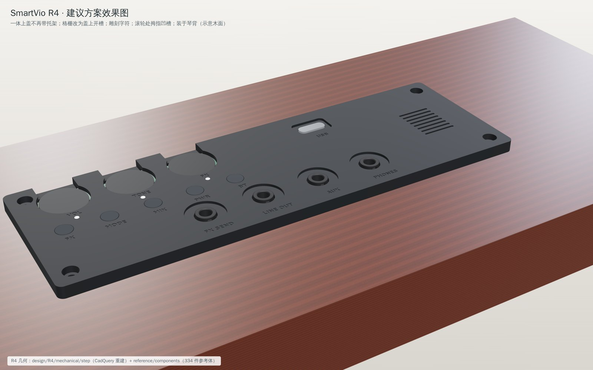
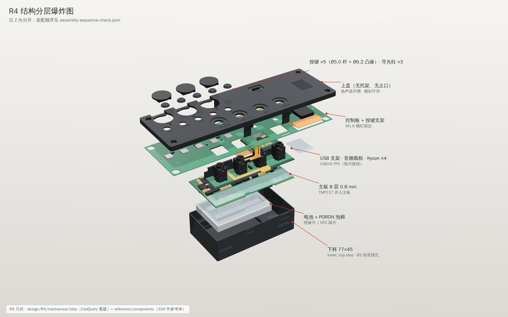
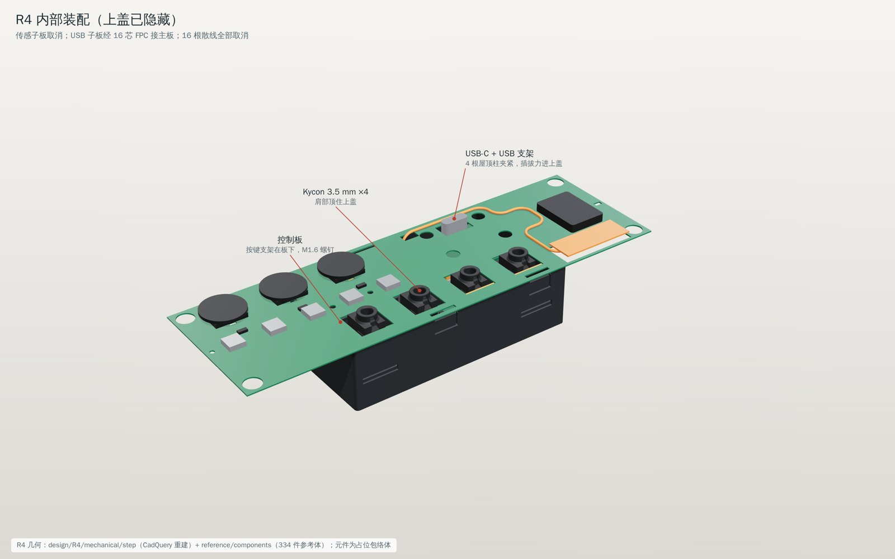
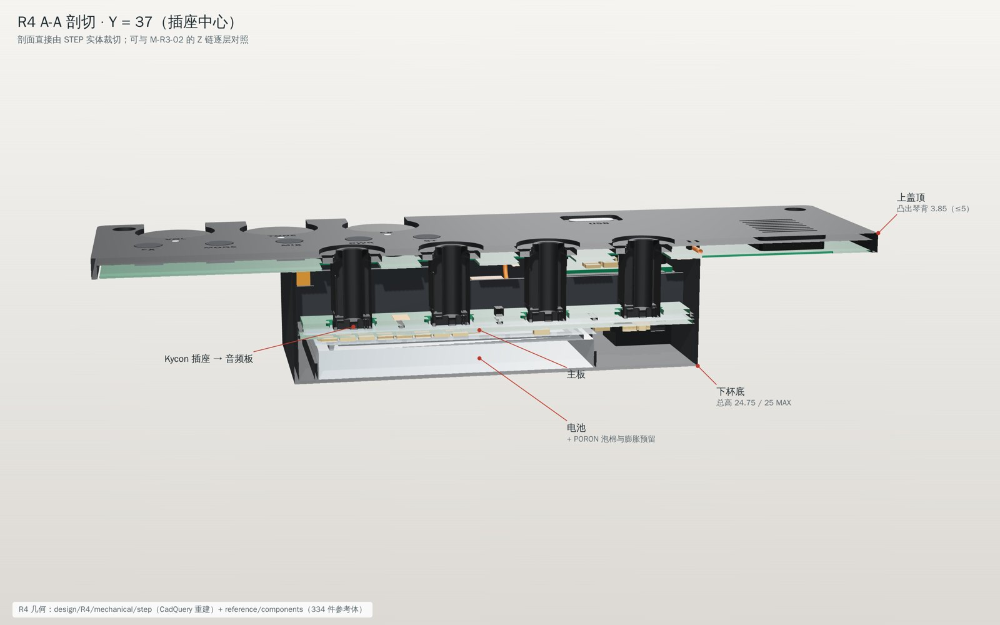
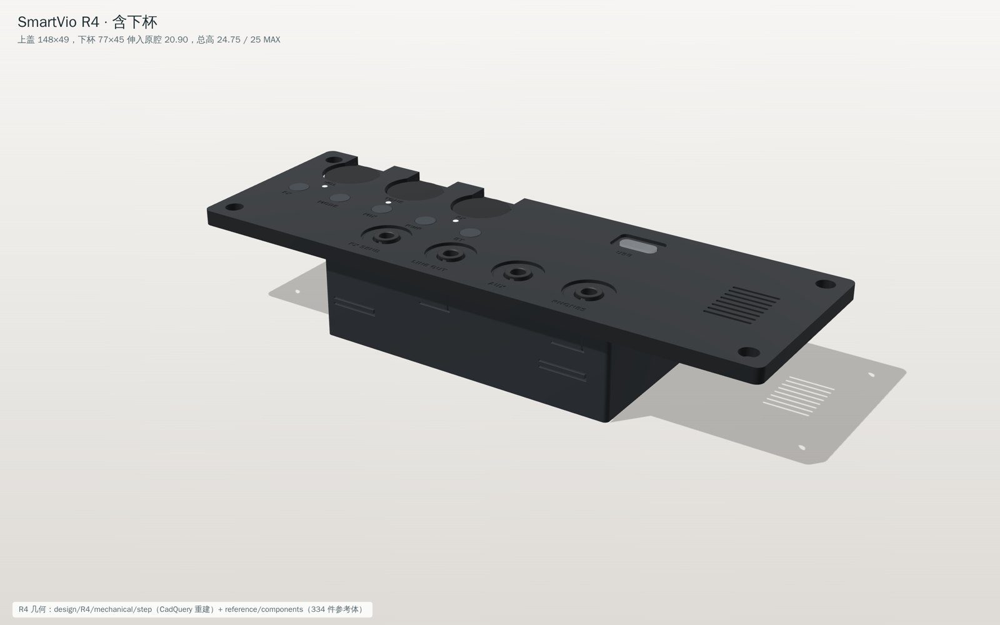

R4 只做一件事：让样机装得上、能出声、能安全充电、日常好用。不加新功能，不换架构，不加芯片。7 个待定问题都按“贴合实际使用、不复杂”定了案，审核中没做完的两项核对已经补完。
结构和固件已直接改好并通过检查。原理图和 PCB 本环境没有 KiCad 10，给出的是逐引脚 ECO，需要工程师在 KiCad 里执行并跑 ERC/DRC。全部数字都是设计和估算值，要以首样实测为准。
| 问题 | 定案 | 理由 |
|---|---|---|
| 安装方向 | 维持 R3：装在琴背，滚轮一端朝琴头。 | 与 R3 的琴背安装基准和腔体位置一致，不动结构基准。 |
| 四弦拾音 | 不做。保持 1 路拾音 + AUX L/R，不加第二颗 ADC。 | 需要专用拾音器和 6–8 路 ADC，成本和风险大，日常练琴用不上。 |
| 滚轮 | 保留 3 个 RK10J 边缘滚轮。每个滚轮北侧开 12 mm 拇指缺口，局部盖面降到 Z 1.5，滚花轮缘高出局部盖面 1.5 mm。 | 板子叠层让轮顶低于盖顶 0.8 mm；加旋钮帽、抬板、换型号都不合适，降低局部盖面最简单。 |
| 外观与字符 | 哑光黑 POM-C；13 处字符 CNC 雕刻 0.15 mm 深；量产转注塑后改镭雕。灯条维持 3 颗点状指示灯。 | 同一次装夹完成，不加工序；雕刻字不会磨掉。 |
| 续航目标 | 耳机（蓝牙关）≥ 7 h；外放中等音量 ≥ 4 h；关机存放 ≥ 6 个月，关机电流 ≤ 20 µA。 | 原定 8 h 估算只有 7.4–7.8 h，不稳，所以定 7 h。< 10 µA 用现有芯片做不到。 |
| 板间连接 | 16 根散线全部取消：USB 子板改 16 芯 FPC；传感子板取消，TMP117 并入主板；新增 4 芯音频 FPC。 | 散线手焊是装配和可靠性的最大风险，FPC 反而更简单。 |
| 耳机检测 J301 | 改 3 个阻容：R322 1k→100k，C320 10 nF→100 nF，J301 脚 6 经新增 R323（0 Ω，默认不装）接地；固件极性可配，200 ms 消抖。 | 原厂图看不清触点 ⑤ 的接法。这个接法两种情况都能用，首样量一次就能定。 |
由 R4 的 CadQuery 源重建 STEP，经 OCCT 网格化后渲染；板子和元件是 R3 原生参考体（元件为占位包络）。





外形约束全部保持：非滚轮外突 3.85（限 5），总高 24.75（R3 为 24.90，限 25）。14 步装配扫掠（2 139 次布尔求交）和 62 481 对成对碰撞检查都是 0 干涉。
| 编号 | R4 修改 | 检查结果 |
|---|---|---|
| M1 致命 | 上盖去掉 USB 托、传感器托、0.1 托条和 Z 止口；拆出按键支架、USB 支架、音频载框 3 个独立件，用 M1.6 螺钉和卡扣固定。 | 控制板扫掠 0 干涉，装配步骤全部通过 |
| M10 | 一体按键：Ø5.0 键杆配 Ø5.2 孔，Ø6.2 法兰，止退搭接 0.5。 | 开关到触头 0.05，扫掠通过 |
| M5 | 拔插头的力经插座肩面进上盖，不经焊点；USB-C 开口收紧到外形 +0.1，USB 板由 4 根屋顶柱夹紧。 | 插座到压台设计间隙 0 |
| M3 / M4 | 主板托台搭接 0.2→1.0，加 8 个侧向定位台；按键力经按键支架回到上盖，不再经下杯。 | 卡齿弹性 0.45，通过 |
| M7 | 杯底开 Ø3.0 拾音线入口；为 USB16 FPC 和 ZIF 留出空间，不再开线孔。 | 保留体不与任何件相交 |
| M8 | 取消不锈钢格栅，改在上盖开 8 条 0.8 槽，天线附近不再有金属。 | 天线净空另见 PCB L-05 |
| 其余 | 导光柱、电池顶部 PORON 泡棉、凸台加厚、同轴线卡筋、杯底 0.75→0.60 等（M2、M6、M11–M17）。 | 见 CHANGES.md |
装配顺序：上盖倒放，依次装按键 → 导光柱 → 扬声器 → 控制板 → 按键支架 → USB 板与支架 → 音频板与插座 → 音频载框；下杯装电池、泡棉、主板；焊好 FPC 后两半卡合，再用 4 颗木螺钉装进琴腔。
新增 12 颗小器件，外加 1 颗默认不装的 0 Ω（R323），改值 22 处，每台约 +0.3 美元；不加芯片，不改架构。新位号都已确认未被占用。
| 编号 | 内容 | 效果 |
|---|---|---|
| E-01 | J301 耳机检测（见定案） | 两种触点结构都能检测 |
| E-02 | 测量分压改高阻（2.2 M/1.5 M），开机键上拉 2.2 M/4.7 M，TPS3700 改由 USB_5V_SAFE 供电 | 关机电流 427 → 约 17 µA（最坏 38 µA） |
| E-03 | 7 个 PhotoMOS 分 3 组驱动（PD14 耳机、PD15 AUX/RETURN、PA3 LINE/SEND），LED 电阻 270→390 Ω | 耳机模式 53 → 10.6 mA |
| E-04 | BQ24074 EN1 改上拉，默认 USB500；固件不选 1.03 A 档 | 不依赖 USB-C 电流识别也安全 |
| E-05 | eFuse R1005 6.65k→2.49k，ITIMER 加 10 nF | 限流 0.5 → 约 1.34 A，不再一充电就限流 |
| E-06 – E-09 | OVLO R1003→39.2k；VBUS 加 12 V TVS；ESP32 改由 V3D 供电；V3D 加 22 µF | 过压门限 5.90 V，模拟电源与蓝牙分开 |
| E-10 – E-14 | 跨域控制线串 1k；PWR 键经二极管接 PB12；ITERM 改 3.32k；C1707→100 pF；U902 散热焊盘编号统一 | 修复插 USB 关机后无法开机 |
另有：TPD2S300 电容就近（PWR-02）、TPS63070 和 LTC2954 焊盘修正（PWR-03/04）、PCM1864 时钟走线与 XI 就地接地（PCM-04）、ESD 二极管移到插座旁、喇叭线加宽、FPC 焊接工艺等，见 ECO 文件。
21 组主机测试全部通过；STM32 镜像用 arm-none-eabi-gcc 13.2 编译（text 45 264 B）。我在本环境重跑过构建脚本，结果一致。硬件测试 0 项。
| 问题 | R4 做法 |
|---|---|
| 开机自检必失败 | 串口解析白名单改为实际使用的帧类型（MCU 与 ESP32 共用代码同时改）。 |
| 耳机无声 | R4 板按 E-03 分组驱动 PD14/PD15/PA3；R3 板也补上 PA3。 |
| 不能充电 | 有 VBUS、无故障、电池 2.5–4.25 V、板温 0–45 °C 并保持 2 s 才允许充电；默认 USB500。 |
| 过放 | 3.45 V 提示；电池供电下低于 3.30 V 持续 3 s，静音、记录并关机。 |
| 插 USB 关机后无法开机 | R4 板按住 PWR 50 ms 即重启进入播放（经 PB12）。 |
| 故障永久锁死 | 故障只静音，1–30 s 后重试；Flash 日志不再让开机静音。 |
| CPU 预算 / 续航 | 开 I/D-cache，主频 120 MHz（音频负载余量约 10%）；音频时钟不变。 |
| 耳机检测 | HP_DETECT_ACTIVE_HIGH 一个开关定极性，200 ms 消抖，自动在耳机和外放之间切换。 |
| BT 键 | 短按开关蓝牙，长按 2 s 打开 60 s 配对窗口，LED2 显示状态。 |
| 拾音太小 | PCM1864 拾音 PGA +12 dB，去掉 /16 衰减；加软件复位；HardFault 时停时钟。 |
时钟树、512 fs 主时钟、64 fs BCK、主从关系、采样沿、输入映射和 I2C 地址都一致。新发现 6 条（1 中、3 低、2 提示），已并入固件和 PCB ECO。
更正：第二版的 FW-PCM1864-CLKCFG 不成立，寄存器 0x20=0x41 是对的。
U501、U1001、U1101、U1301、U1401、U1921 逐脚与网表、焊盘一致，没有接错脚。新发现 9 条，最重要的是 eFuse 只限流 0.5 A（PWR-01），已在 E-05 修正。
更正：SCH-PSYNC-PFM 撤回（PS/SYNC 接地是强制 PWM）；B2 关闭（TPD2S300 无电时自带 Rd）。TPS3700 充电窗口约 4.8–39.5 °C，再次确认第一版 A1 应撤回。
TI/ADI 官网在本环境不可访问，这两项里的数据手册事实来自搜索到的官方页面摘录，报告里逐条标了来源和置信度。
| 工况 | 平均电流 | 新电池 | 电池 80% |
|---|---|---|---|
| R3 原样：耳机，400 MHz，7 路 PhotoMOS | 243 mA | 3.7 h | 3.0 h |
| R4：耳机，蓝牙关，120 MHz | 122 mA | 7.4 h | 6.0 h |
| R4：耳机 + AUX 伴奏 | 133 mA | 6.9 h | 5.5 h |
| R4：外放 100 mW，蓝牙关 | 108 mA | 6.4 h | 5.1 h |
| R4：外放 100 mW，BLE 连接 | 147 mA | 5.0 h | 4.0 h |
| R4：关机存放 | 约 17 µA | 6 个月用掉约 7.5% 电量 | |
现在最大的两个负载是 PCM1864 和 MCU；首样要实测 120 MHz 下的真实电流。
| 谁来做 | 事项 |
|---|---|
| 你 · 1 分钟 | 用万用表量一只 Kycon STX-353K7A-6N：插入 TRS 插头前后 4–5、5–6 是否导通。结果决定 R323 装不装、固件极性取哪个。 |
| 硬件工程师 | 在 KiCad 10 执行 14 项原理图 ECO 和 22 项 PCB/FPC ECO，跑 ERC、DRC 和原理图一致性检查；画 KEYS6（去镜像）、USB16、AUDIO4 的 FPC 平面图并做纸样实装；音频板 K1205/C222/K1207 南移 0.8 mm；TPS63070 第二颗 10 µF 输入电容补位号。 |
| 固件 | 用 ESP-IDF 5.4.3 重编 ESP32 镜像（包里缺 sdkconfig，包内旧 .bin 不能用）。首次与新耳机配对需要在 ESP32 上加搜索并把地址存到 NVS，本环境没有 ESP-IDF，未做。 |
| 首样台架 | 插 USB 关机后按 PWR 重启时 LTC2954 是否会断电（FW-RESET-KILL，不行就把 R1302 改接 V3D）；续航和关机电流实测；卡扣疲劳、按键手感、异响、插拔力；扬声器音量（没有背腔）。 |
| 结构 | 最坏情况尺寸链仍是 HOLD；工程图（engineering_drawings.py）未重新生成；NTC 预压需要 VARTA 资料；琴腔底部拾音线孔按实测琴体配钻。 |
全部在仓库分支 claude/amazing-bohr-96rp0s 的 design/R4/ 下，原 R3 文件一律未改。
| 路径 | 内容 |
|---|---|
| DECISIONS.md | 7 个问题的定案 |
| mechanical/ | build_mechanics.py、R3→R4 补丁、step/（结构件 STEP）、装配扫掠结果、CHANGES.md |
| firmware/ | R3→R4 补丁、改动源码与 Linux 构建脚本、build/（ELF/BIN/MAP）、CHANGES.md 与上板验收清单 |
| eco/ | ECO-R4-schematic.md、ECO-R4-pcb-fpc.md 及对应 JSON |
| checks/ | PCM1864 时钟与 SAI、电源 IC 逐脚与封装两份核对报告 |